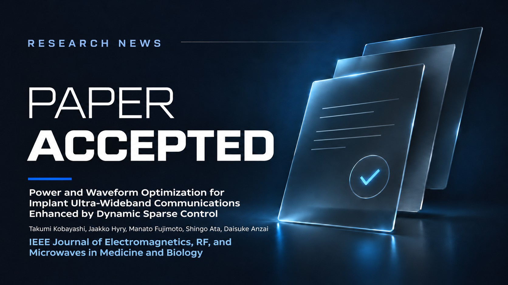

One paper has been accepted for publication in the international journal “IEEE Journal of Electromagnetics, RF, and Microwaves in Medicine and Biology”.
Publication
- J36
Power and Waveform Optimization for Implant Ultra-Wideband Communications Enhanced by Dynamic Sparse Control
IEEE Journal of Electromagnetics, RF, and Microwaves in Medicine and Biology, Vol. 10, No. 3, pp. 410-418, Sept. 2026